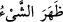
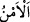

“Onların yurdu” olan Yemen beldeleri “ile, içlerini” sular, ağaçlar, meyveler, en üst
ve en aşağı tabakadan herkes için bolluk ve müreffeh hayatla “bereketlendirdiğimiz
memleketler” yâni Şam beldeleri “arasında,…” demektir.
“
” belde veya başka yer, insanların toplandığı mahaldir. Burada Filistin, Eriha ve
Ürdün ve benzeri yerler kasdedilmiştir. Bereket, bir şeyde ilâhî hayrın sâbit olması,
mübarek ise bu hayrın bulunduğu şeydir.
“Kolayca görünen nice kasabalar var ettik.”
“
” bir şeyin zâhir ve açık olmasının asıl anlamı, yeryüzünde bulunup gizli
kalmaması demektir. “
” ise bir şeyin yerin içinde olup gizli kalması demektir.
Sonra göze ve basirete, görünen her şey için kullanılır olmuştur.
Yâni birbirine yakın olduğundan birinden diğeri görünecek şekilde bitişik belde ve
köyler var ettik. Dolayısıyla bu kasabalar, ahâlînin gözünde görünür durumdadır. Ya da
bu köyler yol boyu güzergahta olup yolculara açık ve yakındır. Onlar yol
güzergâhlarından uzak değildir ki onlardan gizli kalsın. Aynu’l-maânî’de: “Sebe
halkının yerleştiği yer olan Me’rib’den Şam’a kadar fâsılasız dört bin yedi yüz köy
vardı.” der.
“Ve bunlar arasında” yolcular için “yürümeyi konaklara ayırdık.” Yâni biz bu
köyleri yolcuların hâline uygun olarak belli mesafelerde takdir ve tanzim ettik. Denilir
ki Yemen ve Şam arasında bulunan bu köylerden birinden sabahleyin yola çıkan öğle
vakti diğer köye ulaşırdı. Orada kaylûle yapar, öğle uykusunu uyur, konaklar ve
dinlenirdi. Aynı şekilde bu köylerden birinden öğlede çıkan yolcu akşamleyin diğer
köye vâsıl olurdu. Şam’a ulaşıncaya kadar yol boyunca köyler arasında su ve yol azığı
taşımaya gerek duymazdı. Bütün bunlar onlara verilen çeşit çeşit nimetleri tamamlamak,
hazarda ve seferde bu nimetleri bollaştırmak içindi.
Peygamberlerin lisânıyla, söz ve hâl diliyle onlara: “Oralarda” bu kasabalarda
maslahat ve menfaatleriniz için dilediğiniz zaman “geceleri, gündüzleri korkusuzca”
insanların çok olması sebebiyle düşman, hırsız, yırtıcı hayvanlardan; bu yerlerin mamur
olmasından dolayı emniyetin vakitten vakite değişmemesi sebebiyle açlık ve susuzluk
gibi endişelerden emin olarak “gezin dolaşın,” dedik.” Onlara yolculuk imkanı
verildiği ve sebepleri hazırlandığı için sanki seyahat kendilerine emredilmiş ve bu
konuda onlara izin verilmiştir.
“
” kelimesinin asıl mânâsı gönül huzuru ve rahatlığı, korku ve endişenin yok
olmasıdır. Ya da yolculuk müddetiniz uzasa da, çok geceler ve gündüzler sürse de orada
güven içinde yürüyün, gezin dolaşın. Yahut ömrünüzün geceleri ve gündüzlerince gezip
dolaşın, orada ancak emniyetle karşılaşırsınız, demektir. Ancak bu söz/emir, gerçek
mânâda değil onlara verilen mezkur yolculuk imkanlarının, zikredilen şekilde
yolculuğun şartlarının ve sebeplerinin hazırlanmasının onlara yolculuğu emretme
mesabesinde kabul edilmiş olmasındandır.